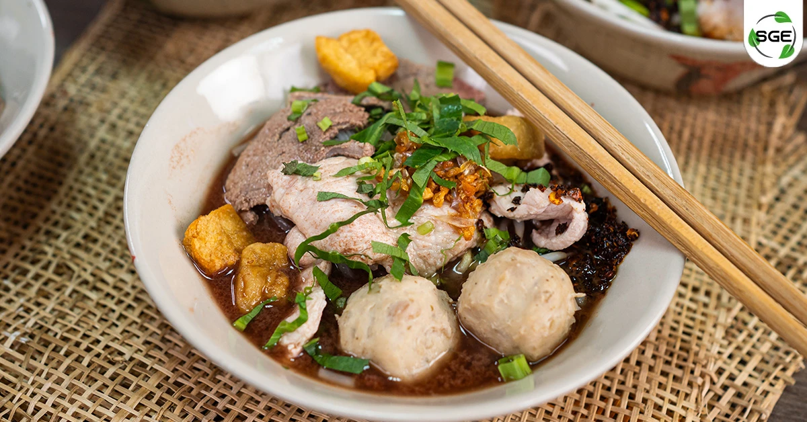

ก๋วยเตี๋ยว

Ingredients (วัตถุดิบ)
- เส้นก๋วยเตี๋ยว (เส้นเล็ก / เส้นใหญ่ / บะหมี่) 1 ที่
- หมูสับหรือเนื้อสัตว์ตามชอบ 150 กรัม
- ลูกชิ้น 3–4 ลูก
- ผักบุ้งหรือถั่วงอก
- น้ำซุป 2 ถ้วย
- กระเทียมเจียว
- ซีอิ๊วขาว
- พริกป่น / น้ำส้มสายชู (ตามชอบ)
Steps (วิธีทำ)
- ตั้งหม้อน้ำซุปให้เดือด
- ลวกเส้นก๋วยเตี๋ยวจนสุก แล้วพักไว้
- ลวกหมูสับ ลูกชิ้น และผักในน้ำซุป
- ตักเส้นใส่ชาม เติมเนื้อสัตว์และผัก
- ราดน้ำซุปร้อน ๆ ลงไป
- ปรุงรสด้วยซีอิ๊วขาว กระเทียมเจียว และเครื่องปรุงตามชอบ
- พร้อมเสิร์ฟ
Nutrition Facts (โภชนาการ)
- Calories: 420 kcal
- Protein: 22 g
- Carbohydrates: 50 g
- Fat: 12 g
← Back to home